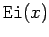

Inhalt Index DeskTop Bronstein

 Computeralgebrasysteme Maple Prozeduren, Funktionen und Operatoren
Computeralgebrasysteme Maple Prozeduren, Funktionen und Operatoren


Maple enthält eine große Anzahl vordefinierter Funktionen, die beim Start des Systems sofort verfügbar sind bzw. aus Spezialpaketen zugeladen werden können. Sie gehören zum Typ . Eine Auflistung kann mit erhalten werden.
In den folgenden zwei Tabellen sind einige aus der großen Anzahl von Standard- und speziellen Funktionen gegeben.
| Exponentialfunktion | |
| Logarithmusfunktionen | |
| Trigonometrische Funktionen | |
| Arcusfunktionen | |
| Hyperbolische Funktionen | |
| Areafunktionen |
| BESSEL-Funktionen Jn(z) und Yn(z) | |
| Modifizierte BESSEL-Funktionen In(z) Kn(z) | |
| Gamma-Funktion | |
| Integralexponentialfunktion |  |
Unter den speziellen Funktionen sind auch die FRESNELschen Funktionen.
Das Paket für orthogonale Polynome enthält neben anderen HERMITEsche-, LAGUERRE-, LEGENDRE-, JACOBI- und TSCHEBYSCHEFF-Polynome. Für Einzelheiten wird auf Lit. 20.6 verwiesen.
In Maple verhalten sich Funktionen wie Prozeduren. Etwas vereinfacht heißt dies: der Name einer Funktion, sofern sie in Maple definiert ist, wird als Prozedur aufgefaßt. Mit anderen Worten, liefert  . Hängt man an die Prozedur das Argument oder auch mehrere, sofern dies nötig ist, in runden Klammern an, so entsteht die entsprechende Funktion von der angegebenen Variablen.
. Hängt man an die Prozedur das Argument oder auch mehrere, sofern dies nötig ist, in runden Klammern an, so entsteht die entsprechende Funktion von der angegebenen Variablen.
| Beispiel |
|
liefert true und liefert false. |
Maple bietet daher die Möglichkeit, selbstdefinierte Funktionen in Form von Prozeduren zu erzeugen. Dazu dient der Erzeugungsoperator ->. Mit
| (20.50) |
und mit mathausdr als algebraischer Ausdruck in der Variablen x, wird eine neue Funktion in Prozedurform mit dem Namen F festgelegt. Der algebraische Ausdruck kann dabei schon vorher definierte und/oder eingebaute Funktionen enthalten. Hängt man an das so erzeugte Prozedursymbol eine unabhängige Variable in runden Klammern an, so entsteht die zugehörige Funktion dieser unabhängigen Variablen.
| Beispiel |
 |
Mit der Übergabe von Zahlenwerten (etwa als Gleitpunktzahlen) an dieses Argument, also durch Aufrufe der Art
Umgekehrt erzeugt man aus einer Funktion (man denke etwa an ein Polynom in der Variablen x) die zugehörige Prozedur mit der Anweisung . So entsteht aus F(y) mit